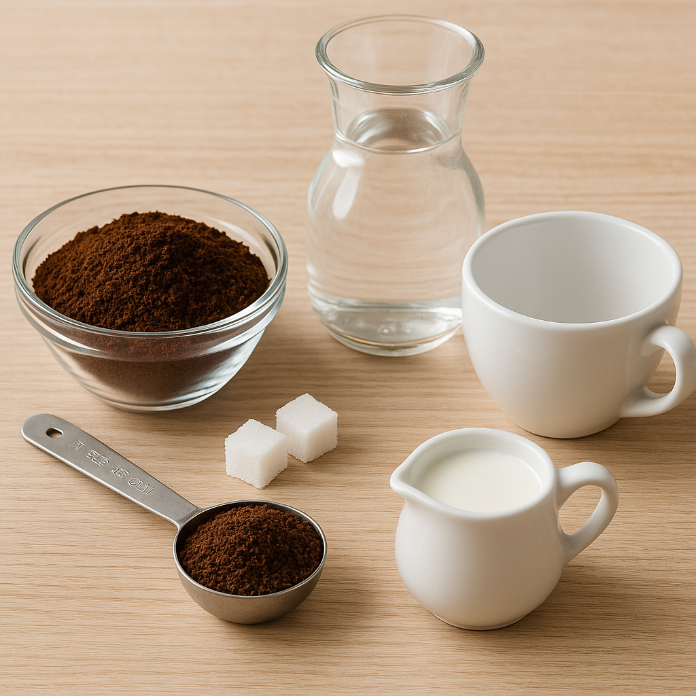
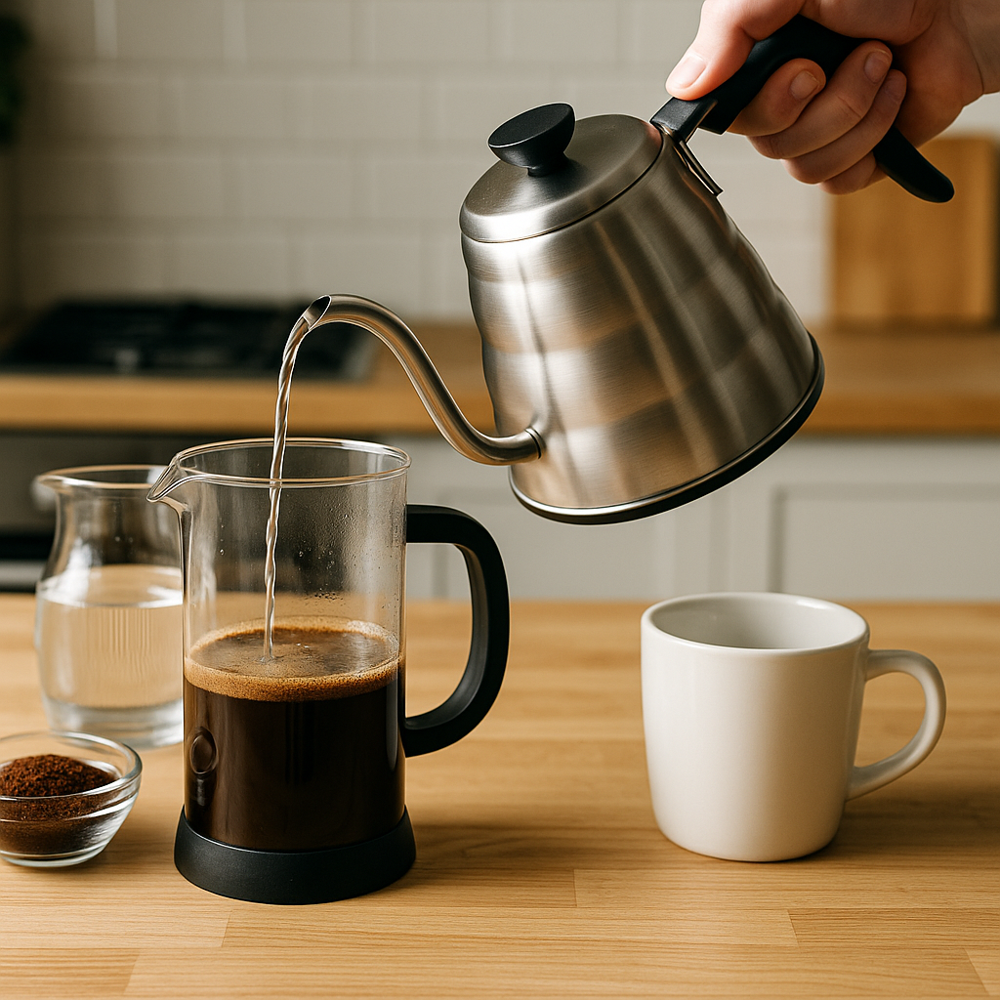
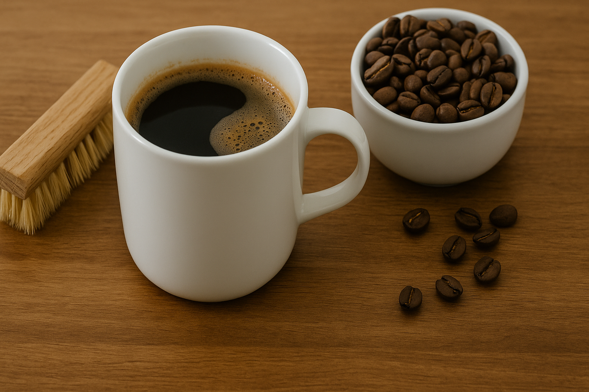

1. Ingredientes necesarios

- Café molido 100% colombiano
- Agua filtrada
- Cafetera o método de preparación (prensa francesa, greca, etc.)
- Azúcar (al gusto)
- Leche (opcional)
2. Proceso de preparación

- Calienta el agua sin dejar que hierva.
- Agrega dos cucharadas de café por cada taza de agua.
- Vierte el agua caliente sobre el café.
- Deja reposar durante 4 minutos si usas prensa francesa.
- Sirve y disfruta tu café recién hecho.
3. Consejos adicionales

- Usa café recién molido para conservar mejor el aroma y sabor.
- Limpia tu cafetera regularmente para evitar sabores amargos.
- No recalientes el café preparado, ya que pierde calidad.
- Guarda el café molido en un recipiente hermético y en un lugar fresco.
Encuentra tu cafetería cercana
Explora algunas cafeterías destacadas en Colombia usando el siguiente mapa: